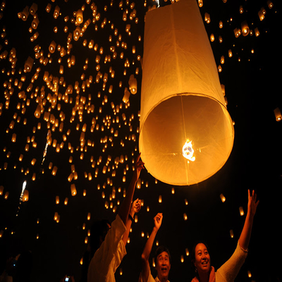
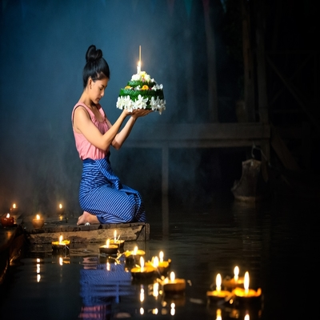
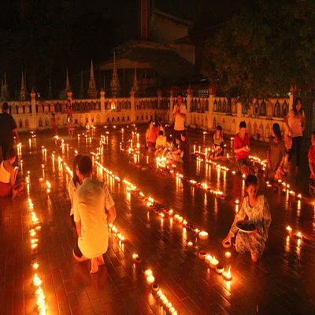

ประเพณียี่เป็ง
ตำนานปีใหม่เมือง
จากคัมภีร์เทศนาธรรมเรื่อง อานิสงส์ปีใหม่เมืองและคำเวนทานปีใหม่ กล่าวถึงตำนานปีใหม่เมืองไว้ว่า ธรรมบาลกุมาร บุตรของมหาเศรษฐี อายุเพียง ๗ ขวบ เป็นผู้ฉลาดหลักแหลม เรียนรู้ภาษาสรรพสัตว์ จนเป็นที่เรื่องลือไปทั่ว ท้าวกบิลพรหมผู้อยู่บนสรวงสวรรค์จึงลงมาถามปัญหา ๓ ข้อ ว่า "ตอนเช้า กลางวัน และกลางคืนศรีของคนอยู่ที่ไหน" โดยให้เวลา ๗ วัน ท้าวกบิลพรหมจะลงมาเอาคำตอบ ถ้าหากธรรมบาลกุมารตอบปัญหาไม่ได้จะต้องถูกตัดหัว และถ้าหากตอบถูกท้าวกบิลพรหมจะยอมถูกตัดเศียร

ความเป็นมา
ประเพณีวันขึ้นปีใหม่ของชาวล้านนา มีความแตกต่างจากสงกรานต์ของชาวไทยภาคกลาง ทั้งระยะเวลา กิจกรรม ความเชื่อ และความมุ่งหมาย ปีใหม่เมืองของชาวล้านนา จึงมีวันและกิจกรรมต่างๆ ที่ปฏิบัติกัน มากกว่าสงกรานต์ของชาวไทยภาคกลาง ซึ่งประกอบด้วย วันสังขานต์ล่อง วันเน่า วันพญาวัน วันปากปี วันปากเดือน และวันปากยาม ปีใหม่เมืองของชาวล้านนาตรงกับเดือนเมษายน ซึ่งอยู่ในฤดูร้อนเป็นช่วงเวลาที่มีอากาศร้อนมาก และช่วงเวลาว่างจากการทำไร่และเก็บเกี่ยวข้าวแล้ว จึงถือเอาวันปีใหม่เป็นวันทำบุญใหญ่วันหนึ่งในรอบปี
กิจกรรม
กิจกรรมที่ชาวล้านนานิยมกระทำในประเพณียี่เป็ง คือ การจุดผางประทีป หรือผางผะตี้ด และโคมไฟบูชาพระเจ้าห้าพระองค์ การปล่อยว่าว จุดบอกไฟชนิดต่างๆ การทำซุ้มประตูป่า เพื่อประดับตกแต่งบริเวณหน้าบ้านหรือวัด การไปทำบุญที่วัดในวันยี่เป็ง การฟังเทศน์ใหญ่ ที่เรียกว่า เทศมหาชาติ หรือ ตั้งธรรมหลวง กิจกรรมต่างๆ เหล่านี้ ทำให้เกิดภูมิปัญญาในการจัดทำเครื่องสักการะบูชา เพื่อใช้ในการบูชาตามความเชื่อของชาวล้านนาในประเพณียี่เป็ง
